Лекция 9: Меняем внешность человека
Photoshop - это виртуальный визажист, в котором можно сделать с внешностью модели что угодно. Вы можете изменить у человека цвет волос, губ, глаз, и так далее.
Устранение дефекта "красные глаза"
Дефект "красные глаза" достаточно распространен среди фотографов, использующих дешевые бытовые фотокамеры (мыльницы). В Adobe Photoshop для решения этой проблемы существует отдельный (специальный инструмент), называемый Красные глаза (J) - рис. 9.1. Пользоваться им очень просто.
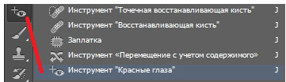Рис. 9.1. Инструмент Красные глаза
На рис. 9.2 показано изображение, на котором в результате съемки с фотовспышкой образовался дефект фотоизображения, именуемый фотографами "красные глаза".
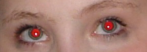Рис. 9.2. Фотоизображение с дефектом "красные глаза"
Активируйте Красные глаза (J) и, с помощью рамки, создаваемой этим инструментом, поочередно обведите каждый глаз девушки - дефект "красные глаза" исчезнет. Атрибуты настройки этого инструмента имеют только два параметра: ползунок Размер зрачка и Величина затемнения - рис. 9.3. Их значения следует подбирать экспериментально.
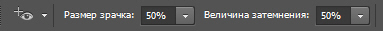Рис. 9.3. Панель свойств инструмента Красные глаза
Пример исправления дефекта этим инструментом приведен на рис. 9.4.
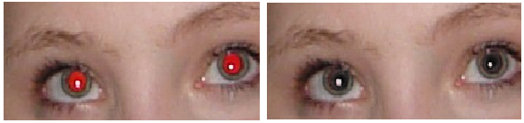Рис. 9.4. Исходное и конечное изображения при корректировке цвета глаз девушки
Меняем цвет глаз
Цвет глаз на фотоснимке можно изменить разными способами. Например, взять глаза из фотографии другого человека ( рис. 9.5). Для копирования глаз из одного фото на другое потребуется инструмент Овальная область, с которым вы уже знакомы.
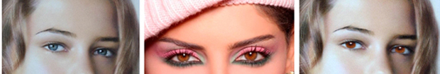Рис. 9.5. На снимке показан принцип замены цвета глаз на фотографиях
Задача решается следующим образом. Инструментом Овальная область выделяем глаза "донора" ( рис. 9.6).
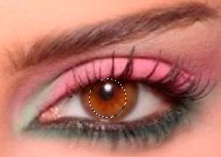Рис. 9.6. Выделяем глаз для копирования
Далее выполняем команду Редактирование-Скопировать и Редактирование-Вставить, тем самым, закрывая слоем с новым цветом глаз слой с прежним цветом. Затем для смягчения границ вклеенного изображения применяется инструмент Размытие. Для завершения работы выполняется команда Слои-Объединить слои.
Примечание
Описанным выше приемом можно исправить также дефект фотографии "красные глаза", который достаточно распространен среди фотографов, использующих дешевые бытовые камеры и фотовспышку.
Меняем цвет волос и убираем седину
В этом примере новым будет только один инструмент - пипетка. Пипетка (I) - инструмент, с помощью которого можно выбрать образец цвета, присутствующего на картинке и задать этот цвет для активного инструмента, например, кисти ( рис. 9.7).
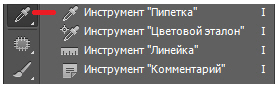Рис. 9.7. Инструмент Пипетка
Исходная фотография приведена на рис. 9.8.
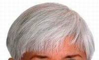Рис. 9.8. Женщина с седыми волосами
Выберем Кисть средней жесткости, а на палитре ее атрибутов настраиваем Непрозрачность на 80%. Потом задаем желаемый цвет волос (например, Пипеткой с какой-либо фотографии), Нажим - примерно 25% и экспериментально подбираем Режим, чтобы "оживить" цвет волос. Попробуйте, например, режим Темнее или Мягкий свет ( рис. 9.9).
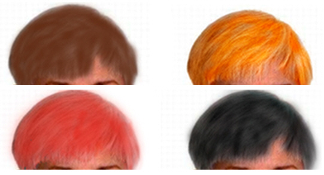Рис. 9.9. Несколько смелых вариантов окраски седых волос
Этим приемом можно менять не только седой, но и любой цвет волос ( рис. 9.10).
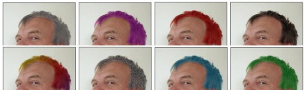Рис. 9.10. Еще один пример замены цвета волос
Улучшаем кожу лица
По разным причинам кожа на лице бывает не очень чистая из-за угрей, веснушек и тому подобного. Рассмотрим, как средствами Photoshop можно исправить ситуацию). Выполним команду: Фильтр – Размытие – Размытие по Гауссу. В открывшемся окне передвинем ползунок Радиус вправо до тех пор, пока на лице не будет видно веснушек. Нажмем OK ( рис. 9.11).
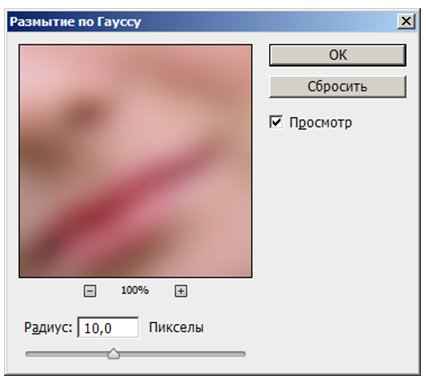Рис. 9.11. Окно Размытие по Гауссу
Следующая команда: Окно – История. Щелкнем мышью на состояние Открыть ( рис. 9.12).
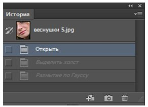Рис. 9.12. Активируем строчку Открыть
Теперь определим источник для Архивной кисти, щелкнув слева от состояния Размытие по Гауссу ( рис. 9.13).
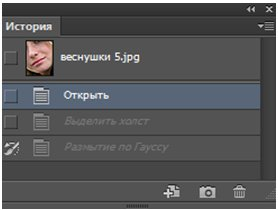Рис. 9.13. Определим источник для Архивной кисти
На панели инструментов выберем инструмент Архивная кисть ( рис. 9.14).
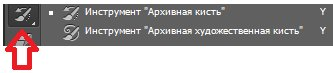Рис. 9.14. Инструмент Архивная кисть
На панели выбора параметров устанавливаем Режим - Замена светлым. Настраиваем кисть с мягкими краями ( рис. 9.15).
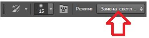Рис. 9.15. Панель свойств инструмента Архивная кисть
Начинаем водить кистью по веснушкам на фото – они исчезают ( рис. 9.16).
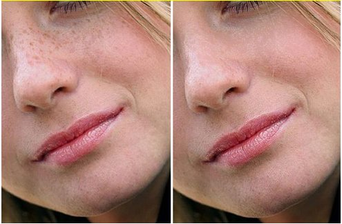Рис. 9.16. Исходное фото с веснушками (слева), веснушки удалены (справа)
Работа с фильтром Пластика
При помощи фильтра Пластика устранить многие проблемы в изображении можно легко и просто. Дело в том, что под воздействием этого фильтра изображение становится текучим. Отдельные участки фотографии вы можете вытягивать, сжимать так, как считаете нужным. Поэтому с его помощью ничего не стоит уменьшить нос, уши или, например, увеличить женскую грудь. Давайте применим этот фильтр практически. Исходный снимок приведен на рис. 9.17. Как видим, на снимке есть небольшой "пивной" живот. Исправлением этого недостатка мы и займемся.
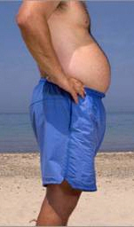Рис. 9.17. Исходный снимок для его редактирования
Выполните команду Фильтр-Пластика - рис. 9.18. Как уже отмечалось, этот фильтр позволяет естественным образом менять размеры графических объектов.
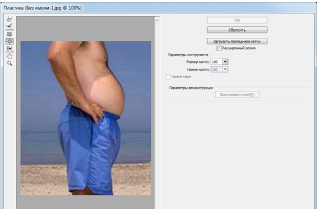Рис. 9.18. Окно фильтра Пластика
Примечание
"Тянуть" изображение при помощи инструментов фильтра Пластика можно по-разному, выбирая инструменты на левой вертикальной панели окна настроек фильтра. На левой панели инструментов есть также кнопки как Рука и Масштаб, которые позволяют перемещаться по изображению и изменять его масштаб соответственно. Для каждого из основных инструментов можно установить параметры, например Размер кисти, Плотность кисти, Нажим кисти и некоторые другие.
Для уменьшения живота применим инструмент Деформация (W). Задайте размер этого инструмента соразмерным с животом модели и втяните живот на фотоснимке, толкая его мышкой "внутрь" ( рис. 9.19). Закончить работу с фильтром Пластика можно, нажав на кнопку ОК.
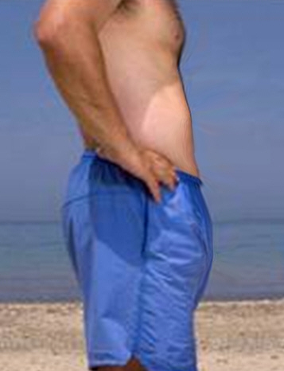Рис. 9.19. Живот уменьшен
Примечание
Этим же приемом можно не только уменьшать (живот, мышцы), но и увеличивать. Используя описанные выше инструменты несложно делать шаржи и первоапрельские шутки, например, превратить вашу знакомую в беременную, а худосочного юношу в атлета.